Epson LS3 水平多關節機械手臂操作指南
本教學依據《03.Epson_LS3機械手臂.pptx》原廠實機培訓教材製作。完整涵蓋 LS3-401S 本體機構、RC90 控制器背板接線、無電池馬達技術革命、專案備份、USB/Ethernet 免密連線、示教器與 SPEL+ 程式設計。
Epson LS3-401S 實體規格 (Slide 18)
4 軸 SCARA
- • 本體重量： 14 kg | 額定/最大負載： 1 kg / 3 kg
- • 工作臂長： J1 (225 mm) + J2 (175 mm) = 總工作半徑 400 mm
- • 垂直行程 (Z軸)： 150 mm | 末端旋轉 (U軸)： ±360°
RC90 工業控制器面板配置 (Slide 16)
前後面板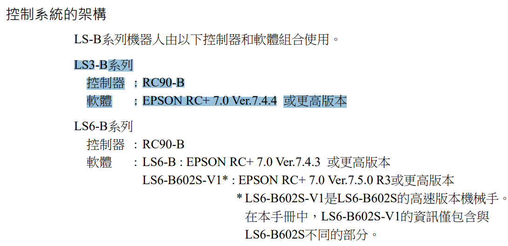
- • 前面板： USB B 型通訊埠、狀態 7 段顯示器、標準 I/O D-Sub 25Pin。
- • 後面板： AC 220V 電源輸入、Emergency Stop 急停端子、馬達動力訊號航插。
- • 安全迴路： 急停具備雙迴路安全繼電器互鎖，確保未短接即觸發硬體斷電。
維護革命：傳統鋰電池更換 vs LS-B 無電池馬達技術
投影片 03: Slide 22 ~ 27
傳統機種維護痛點 (Slide 22)：
採用 3.6V ER17500V 鋰電池保存編碼器多圈數據。每 2~3 年須通電更換電池，若未及時更換導致斷電，原點資訊將全數遺失，必須執行耗時且高精度的校準程序 (Calibration)。
LS-B / LS6-B 創新革命 (Slide 27)：
全面採用無電池式絕對型編碼器 (Battery-less Motor)，透過磁阻記憶體在斷電時永久鎖定圈數與角度資訊。終身免更換電池、終身免校準原點，大幅降低維護成本與非預期停機風險！
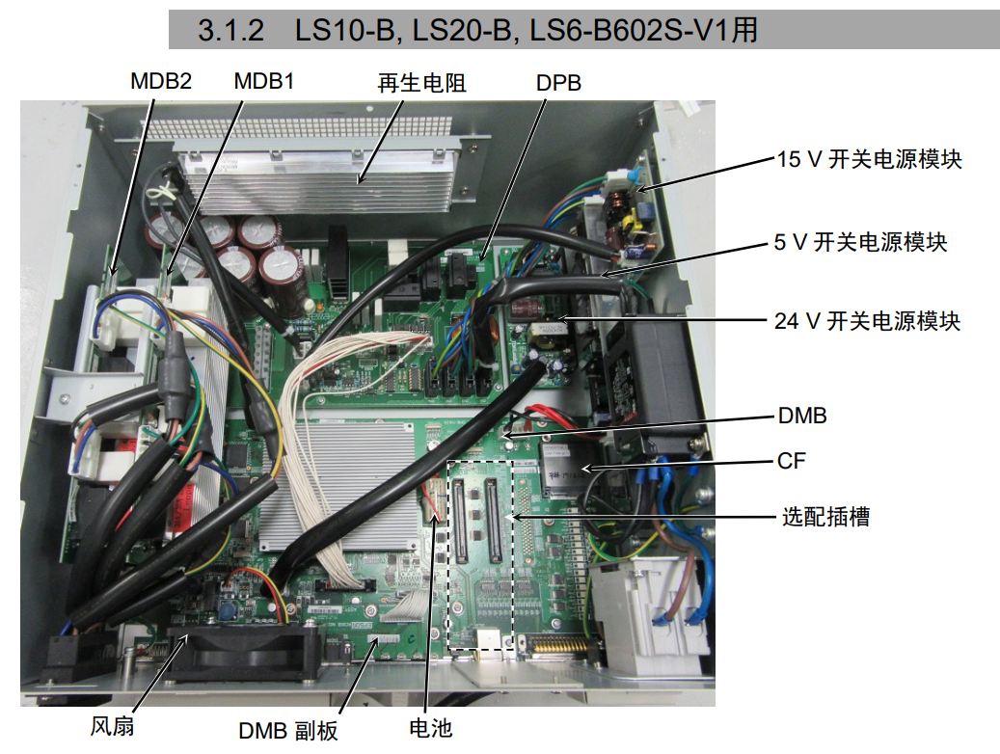
Slide 22: 3.6V 鋰電池 Slide 27: 無電池馬達革命
Slide 27: 無電池馬達革命
確認備份與專案管理 (Project & Backup SOP)
在進行任何機械手臂調整前，必須先建立系統基線備份，確保隨時可透過外部隨身碟還原點位與控制器韌體組態。
專案複製步驟 (Slide 04)
- 功能表點選 [專案 (Project)] ➔ [複製 (Copy)]。
- 變更 [Destination Drive] 為外接隨身碟磁區。
- 點擊 <OK>，將完整
.sprj專案複製至外部媒體備存。
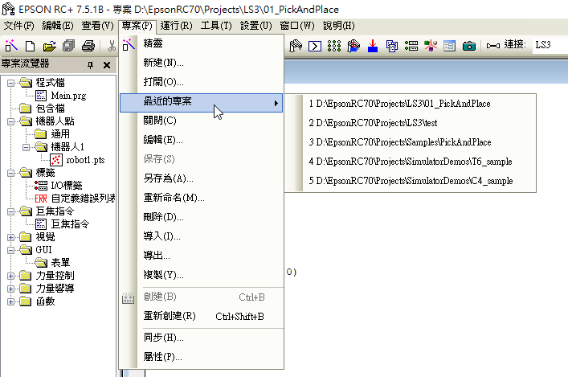
控制器系統備份步驟 (Slide 05)
- 功能表點選 [工具 (Tools)] ➔ [控制器 (Controller)]。
- 按下 <備份控制器 (Backup Controller)> 按鈕。
- 設定備份檔名並指定磁碟機，完成驅動韌體與系統配置備份。
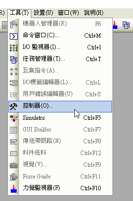
通訊連線設定 (USB 免密碼連線與 Ethernet 網路)
Epson RC+ 7.0 預設支援 USB 2.0 / 1.1 免密碼連線，亦可透過工業乙太網路 (Ethernet TCP/IPv4) 進行跨網段遠端連線：
USB 2.0 連線 (Slide 06 ~ 07)
使用 USB Type-B 纜線直接插入 RC90 控制器前面板。在 RC+ 中點擊 [設置] ➔ [電腦與控制器通信]，選擇「No.1 USB」，點擊 <連接>，狀態顯示為已連接即可。
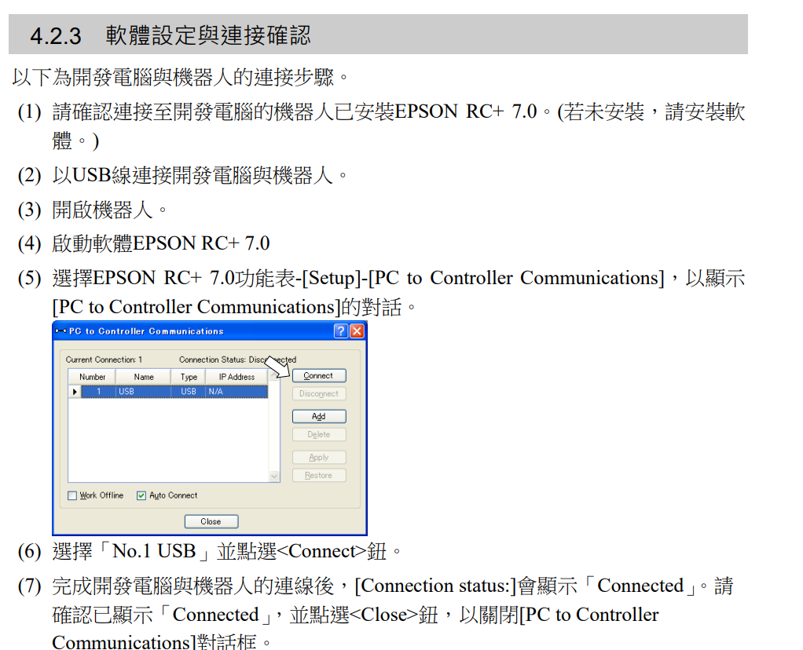
Ethernet 網路連線 (Slide 11)
使用 RJ45 網路線連入工廠區域網路。手動指定控制器固定 IPv4 位址（例如 192.168.0.1）與子網路遮罩，請注意 EPSON RC+ 目前不支援 IPv6 協議。
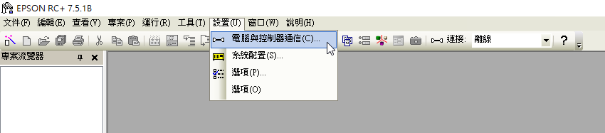
指令視窗測試與系統自我診斷 (Command Testing)
通訊連線成功後，進入 [工具 (Tools)] ➔ [命令窗口 (Command Window)]。在送電激磁前，必須先執行控制器狀態重置並檢測急停互鎖狀態：
系統配置與硬體診斷 (Slide 12)
檢查安全門回路 (Safeguard) 是否閉合、急停開關 (E-Stop) 是否彈起，並確認四軸馬達溫度與編碼器通訊訊號全部正常。
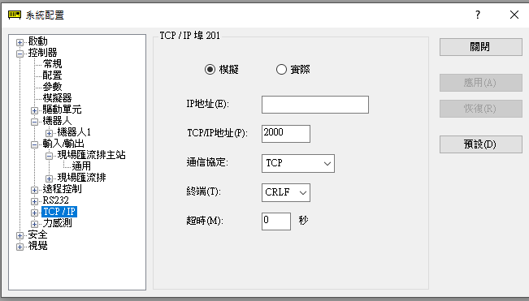
命令窗口指令即時測試 (Slide 14)
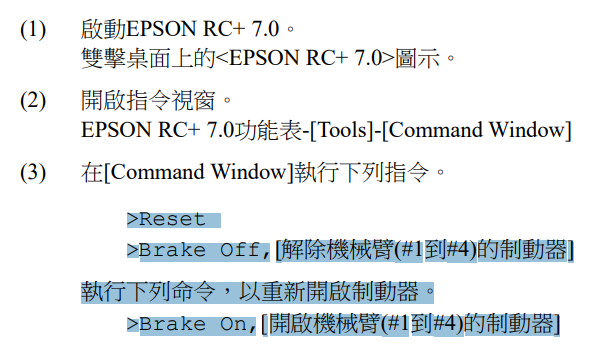
示教機器人點位 (Robot Manager / Jog & Teach)
透過圖形化 Robot Manager 介面以吋動 (Jog) 方式微調各關節，並記錄實際取放點位數據表 (Point Data Table)：
Jog & Teach 吋動示教 (Slide 15 & 39)
選擇座標模式 (World / Joint)，點擊 +X / -X、+Y / -Y 步進前進。到達目標位置後點選 <Teach> 儲存為 pick 或 place。
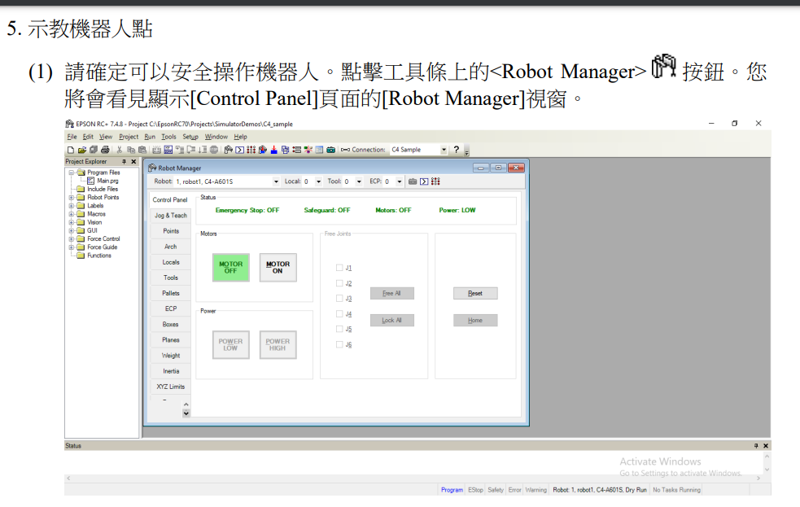
點位數據表管理 (Slide 38)
所有示教點位均會自動登錄於 robot1.pts 點位檔案中，包含 X, Y, Z, U 座標以及 /R (右手姿態) 或 /L (左手姿態) 旗標。
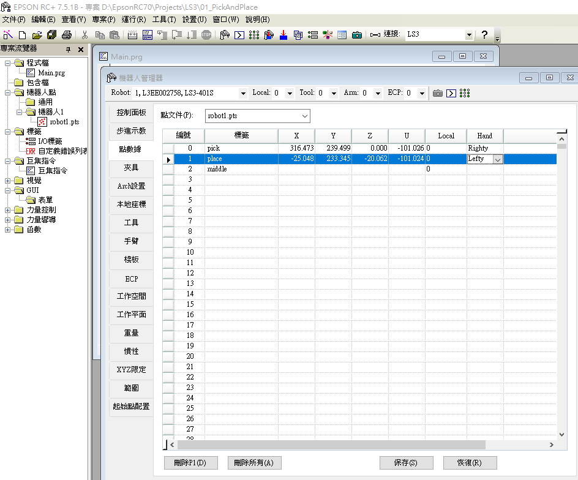
寫程式控制與 3D 模擬驗證 (SPEL+ & Simulation)
使用 SPEL+ 撰寫完整取放循環，並在啟動實體機械手臂前，透過 EPSON RC+ 3D 模擬器進行虛擬碰撞干涉防護檢查：
SPEL+ 取放自動化程式 (Slide 40)
Motor On
Power High
Speed 70; Accel 70, 70
Do
Jump pick
On 1; Wait .2
Jump place
Off 1; Wait .2
Loop
Fend
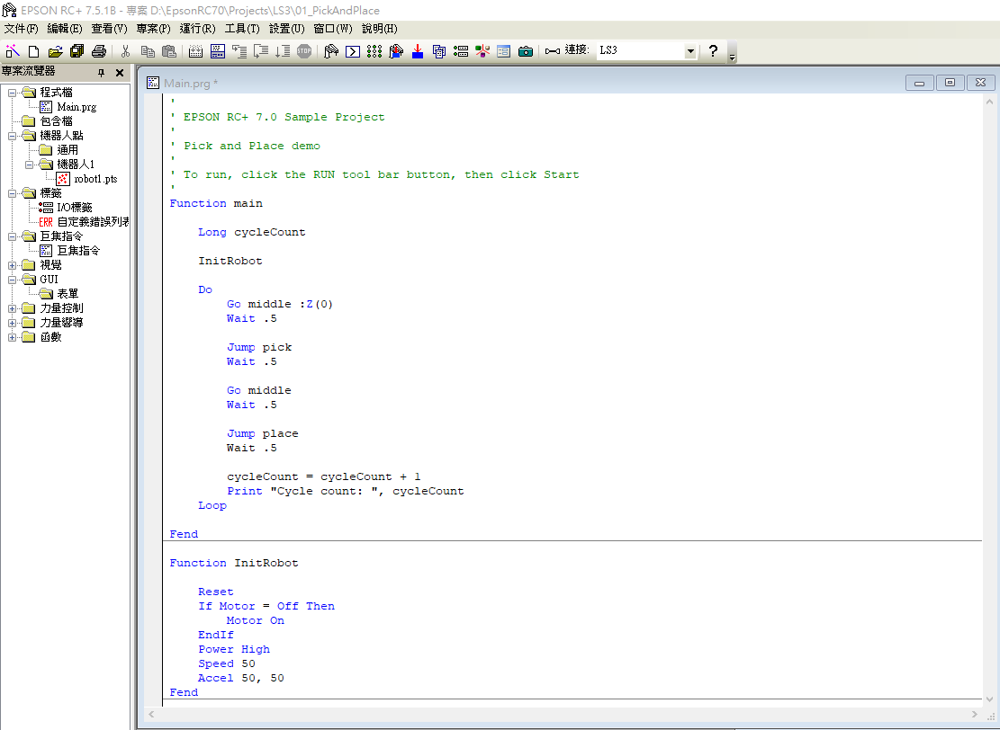
模擬運行窗口控制面板 (Slide 41)
在控制面板 (Run Window) 點選 <Start> 啟動，可即時查看馬達負載率、I/O 點狀態與 3D 模擬器即時空間姿態動作。
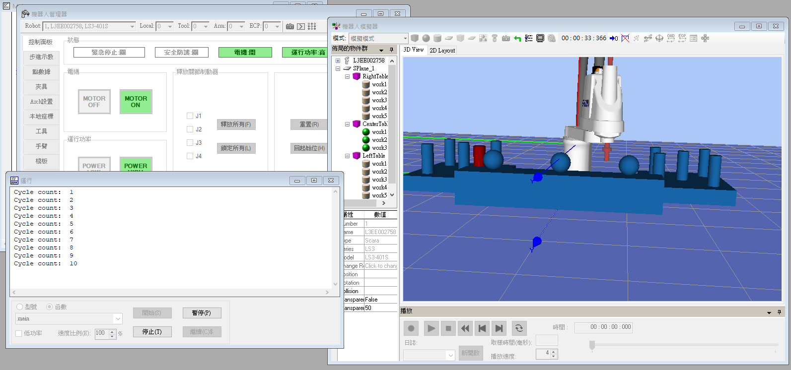
Epson RC+ 命令窗口與機械手臂模擬器
快捷操作按鈕
目前機械臂狀態指示
Epson LS3 機械手臂操作測驗
1. 在 Epson RC+ 7.0 中，透過哪種通訊方式連接機器人時不需要密碼身份驗證？
2. 機器人控制器在連線時不支援哪一種網路通訊協定版本？
3. 針對 Epson LS3-401S 水平多關節機械手臂，下列規格何者正確？